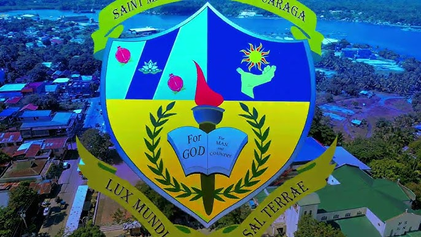

About SMCC

Saint Michael College of Caraga also referred to by its acronym SMCC is a private, Roman Catholic, basic education and higher education institution run by the Roman Catholic Diocese of Butuan in Nasipit, Agusan del Norte in the Philippines. It was established in 1948 by the Missionaries of the Sacred Heart (MSC) fathers. Its main campus is located at Atupan Street, Barangay 4 Poblacion, Nasipit, Agusan del Norte. The second campus is located in Brgy. Triangulo houses the elementary department.